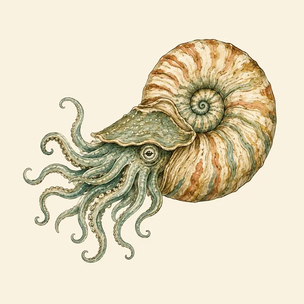
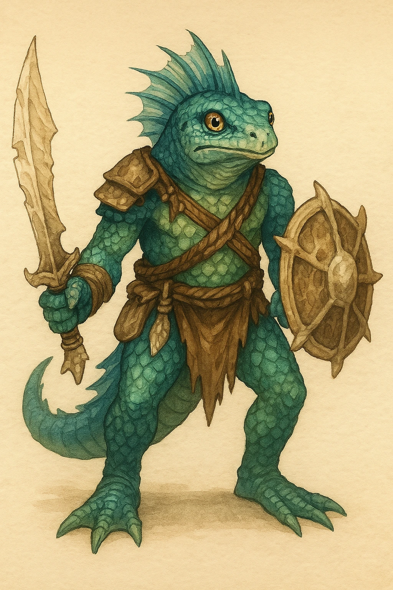

???
???
Noch keine gesicherte Überlieferung.

KreaturenarchivAleria und infernale Sphären · Gewässer und Thraals Domäne · Archivblatt IV / 07
Wassergebundene infernale Gattungen im Dienst Thraals
Nautiloiden sind von Thraal geprägte Wesen der Gewässer. Ihre bekannten Formen reichen vom bewaffneten Thraalkin über die menschenähnliche Sirene bis zum gewaltigen Leviathan; Körperbau, Bewegung und Jagdweise folgen dem Wasser und der infernalen Ordnung ihres Schöpfers.

„Im Wasser verrät kein Fußtritt ihre Nähe; achte auf Strömung, Stille und den Schatten, der gegen die Tiefe zieht.“Hinweis aus einem alerischen Seefahrerarchiv
Sechs Merkmale · Skala 1–10
Das Diagramm beschreibt die gemeinsame Wasserprägung der Nautiloiden: Bindung an die Tiefe, Beweglichkeit im Element und Abhängigkeit von Thraals infernalem Einfluss.
Quelle der Einordnung: Aus Schöpferzuordnung, bekannten Körperformen, wassergebundener Erscheinung und den überlieferten Gattungen der Nautiloiden abgeleitet
Nautiloiden bilden eine infernale Ordnung, deren bekannte Gestalten an Wasser, Tiefe und Thraals Willen gebunden sind. Der Begriff umfasst sowohl aufrecht gehende oder menschenähnliche Gattungen als auch große Kreaturen.
Nicht jede Form ist gleich gebaut oder gleich beweglich. Gemeinsam ist ihnen, dass das Wasser ihre natürliche Stärke trägt und trockener Boden diese Überlegenheit mindert.
Als Schöpfer gilt Thraal. Seine Prägung zeigt sich weniger in einer einzigen Körperform als in der Anpassung an Strömung, Druck, Dunkelheit und das lautlose Annähern unter der Wasseroberfläche.
Der Thraalkin verbindet einen amphibischen Körper mit Werkzeug- und Waffenführung. Sirenen verbergen ihre Fremdartigkeit hinter einer menschenähnlichen Gestalt, während Leviathane als gewaltige, vollständig wassergebundene Kreaturen geführt werden.
Die alte Tafel trennt Nautiloide von nautiloiden Kreaturen. Damit werden handelnde Gattungen wie Thraalkin und Sirenen von Großwesen wie den Leviathanen unterschieden, ohne ihre gemeinsame Zugehörigkeit zu Thraal aufzulösen.
Nautiloiden kündigen sich nicht durch gewöhnliche Landspuren an. Ungewöhnliche Strömungen, plötzlich verstummende Gewässer und Bewegungen unterhalb der sichtbaren Tiefe sind verlässlicher als Abdrücke am Ufer.
Eine Begegnung sollte nach Möglichkeit aus dem Wasser heraus verlagert werden. An Land verlieren viele Formen einen Teil ihrer Beweglichkeit; im Wasser bestimmen sie Abstand, Richtung und Zeitpunkt des Angriffs.
Gegen größere Formen ist Rückzug oft sinnvoller als ein direkter Kampf. Schutz vor Lockung, klare Verständigungszeichen und eine gesicherte Uferlinie mindern die Gefahr, getrennt oder in die Tiefe gezogen zu werden.